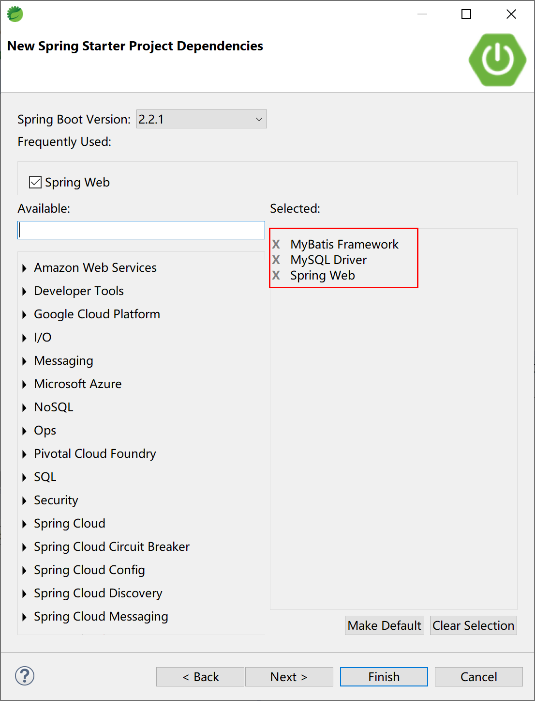

5.3 MyBatis分页
一旦谈及ORM持久化，就必须涉及其查询结果集的分页问题。
在MyBatis中，一旦涉及分页，基本上都会想到PageHelper这个开源分页插件项目
如果你也在用 MyBatis，建议尝试该分页插件（PageHelper），这一定是最方便使用的分页插件。分页插件支持任何复杂的单表、多表分页。
- 物理分页：支持常见的 12 种数据库： Oracle,MySql,MariaDB,SQLite,DB2,PostgreSQL,SqlServer 等；
- 支持多种分页方式： 支持常见的RowBounds(PageRowBounds)，PageHelper.startPage 方法调用， Mapper 接口参数调用；
- QueryInterceptor 规范： 使用 QueryInterceptor 规范，开发插件更轻松。
PageHelper会使用ThreadLocal获取到同一线程中的变量信息。各个线程之间的Threadlocal不会相互干扰，也就是Thread1中的ThreadLocal1只能获取到Tread1中的变量的信息，不会获取到Thread2中的信息。在多线程环境下，各个Threadlocal之间相互隔离，可以实现不同Thread使用不同的数据源或在不同的Thread中执行不同的SQL语句。
所以，PageHelper利用这一点通过拦截器获取到同一线程中预编译好的SQL语句，然后将SQL语句包装成具有分页功能的SQL语句，并将其再次赋值给下一步操作，这样实际执行的SQL语句就是有了分页功能的SQL语句。
下面，我们先简单介绍在传统Spring中如何使用分页插件，然后再以一个Spring Boot项目来学习其简化的“启动器（starter）”用法。
为什么要用传统Spring方式来介绍？
因为这样能更好的理解其配置内容的详细信息。
5.3.1 引入分页插件
在 pom.xml 中添加如下依赖：
<dependency>
<groupId>com.github.pagehelper</groupId>
<artifactId>pagehelper</artifactId>
<version>5.1.10</version>
</dependency>
5.3.2 配置拦截器插件
特别注意，新版拦截器是 com.github.pagehelper.PageInterceptor。 com.github.pagehelper.PageHelper 现在是一个特殊的 dialect 实现类，是分页插件的默认实现类，提供了和以前相同的用法。
使用 spring 的属性配置方式，可以使用 plugins 属性像下面这样配置：
<bean id="sqlSessionFactory" class="org.mybatis.spring.SqlSessionFactoryBean">
<!-- 注意其他配置 -->
<property name="plugins">
<array>
<bean class="com.github.pagehelper.PageInterceptor">
<property name="properties">
<!--使用下面的方式配置参数，一行配置一个 -->
<value>
params=value1
</value>
</property>
</bean>
</array>
</property>
</bean>
分页插件参数介绍： 分页插件提供了多个可选参数，这些参数使用时，按照上面配置方式中的示例配置即可。
分页插件可选参数如下：
dialect：默认情况下会使用 PageHelper 方式进行分页，如果想要实现自己的分页逻辑，可以实现 Dialect(com.github.pagehelper.Dialect) 接口，然后配置该属性为实现类的全限定名称。
下面几个参数都是针对默认dialect情况下的参数。使用自定义dialect实现时，下面的参数没有任何作用。
helperDialect：分页插件会自动检测当前的数据库链接，自动选择合适的分页方式。 你可以配置helperDialect属性来指定分页插件使用哪种方言。配置时，可以使用下面的缩写值： oracle,mysql,mariadb,sqlite,hsqldb,postgresql,db2,sqlserver,informix,h2,sqlserver2012,derby 特别注意：使用 SqlServer2012 数据库时，需要手动指定为 sqlserver2012，否则会使用SqlServer2005 的方式进行分页。 你也可以实现 AbstractHelperDialect，然后配置该属性为实现类的全限定名称即可使用自定义的实现方法。
offsetAsPageNum：默认值为 false，该参数对使用 RowBounds 作为分页参数时有效。 当该参数设置为 true 时，会将 RowBounds 中的 offset 参数当成 pageNum 使用，可以用页码和页面大小两个参数进行分页。
rowBoundsWithCount：默认值为false，该参数对使用 RowBounds 作为分页参数时有效。 当该参数设置为true时，使用 RowBounds 分页会进行 count 查询。
pageSizeZero：默认值为 false，当该参数设置为 true 时，如果 pageSize=0 或者 RowBounds.limit = 0 就会查询出全部的结果（相当于没有执行分页查询，但是返回结果仍然是 Page 类型）。
reasonable：分页合理化参数，默认值为false。当该参数设置为 true 时，pageNum<=0 时会查询第一页， pageNum>pages（超过总数时），会查询最后一页。默认false 时，直接根据参数进行查询。
params：为了支持startPage(Object params)方法，增加了该参数来配置参数映射，用于从对象中根据属性名取值， 可以配置 pageNum,pageSize,count,pageSizeZero,reasonable，不配置映射的用默认值， 默认值为pageNum=pageNum;pageSize=pageSize;count=countSql;reasonable=reasonable;pageSizeZero=pageSizeZero。
supportMethodsArguments：支持通过 Mapper 接口参数来传递分页参数，默认值false，分页插件会从查询方法的参数值中，自动根据上面 params 配置的字段中取值，查找到合适的值时就会自动分页。 使用方法可以参考测试代码中的 com.github.pagehelper.test.basic 包下的 ArgumentsMapTest 和 ArgumentsObjTest。
autoRuntimeDialect：默认值为 false。设置为 true 时，允许在运行时根据多数据源自动识别对应方言的分页 （不支持自动选择sqlserver2012，只能使用sqlserver），用法和注意事项参考下面的场景五。
closeConn：默认值为 true。当使用运行时动态数据源或没有设置 helperDialect 属性自动获取数据库类型时，会自动获取一个数据库连接， 通过该属性来设置是否关闭获取的这个连接，默认true关闭，设置为 false 后，不会关闭获取的连接，这个参数的设置要根据自己选择的数据源来决定。
重要提示：
当 offsetAsPageNum=false 的时候，由于 PageNum 问题，RowBounds查询的时候 reasonable 会强制为 false。使用 PageHelper.startPage 方法不受影响。
5.3.3 Spring Boot集成方式
准备工作：复用上小节的User数据库表和Entity对象。在User表中，插入101条记录。
首先创建一个Spring Boot项目，选中的starter有：
- Spring Web;
- MySQL Driver;
- MyBatis Framework.

然后手动添加pagehelper-spring-boot-starter，以使用PageHelper分页插件。
其pom文件为：
<?xml version="1.0" encoding="UTF-8"?>
<project xmlns="http://maven.apache.org/POM/4.0.0" xmlns:xsi="http://www.w3.org/2001/XMLSchema-instance"
xsi:schemaLocation="http://maven.apache.org/POM/4.0.0 https://maven.apache.org/xsd/maven-4.0.0.xsd">
<modelVersion>4.0.0</modelVersion>
<parent>
<groupId>org.springframework.boot</groupId>
<artifactId>spring-boot-starter-parent</artifactId>
<version>2.2.1.RELEASE</version>
<relativePath/> <!-- lookup parent from repository -->
</parent>
<groupId>com.example.mybatis</groupId>
<artifactId>pagehelper</artifactId>
<version>0.0.1-SNAPSHOT</version>
<name>PageHelper</name>
<description>MyBatis PageHelper Example.</description>
<properties>
<java.version>1.8</java.version>
</properties>
<dependencies>
<dependency>
<groupId>org.springframework.boot</groupId>
<artifactId>spring-boot-starter-web</artifactId>
</dependency>
<dependency>
<groupId>org.mybatis.spring.boot</groupId>
<artifactId>mybatis-spring-boot-starter</artifactId>
<version>2.1.1</version>
</dependency>
<!-- pagehelper分页插件依赖 -->
<dependency>
<groupId>com.github.pagehelper</groupId>
<artifactId>pagehelper-spring-boot-starter</artifactId>
<version>1.2.12</version>
</dependency>
<dependency>
<groupId>mysql</groupId>
<artifactId>mysql-connector-java</artifactId>
<scope>runtime</scope>
</dependency>
<dependency>
<groupId>org.springframework.boot</groupId>
<artifactId>spring-boot-starter-test</artifactId>
<scope>test</scope>
<exclusions>
<exclusion>
<groupId>org.junit.vintage</groupId>
<artifactId>junit-vintage-engine</artifactId>
</exclusion>
</exclusions>
</dependency>
</dependencies>
<build>
<plugins>
<plugin>
<groupId>org.springframework.boot</groupId>
<artifactId>spring-boot-maven-plugin</artifactId>
</plugin>
</plugins>
</build>
</project>
上面的pom.xml文件中，第32-37行，就是使用PageHelper分页插件的启动器依赖。
5.3.3.1 配置PageHelper参数
使用application.yml为PageHelper配置参数：
# 分页插件配置
pagehelper:
helper-dialect: mysql
reasonable: true
support-methods-arguments: true
params: count=countsql
# mysql数据源配置
spring:
datasource:
url: jdbc:mysql://localhost:3306/springboot?useUnicode=true&characterEncoding=utf-8
driver-class-name: com.mysql.jdbc.Driver
username: root
password: 123456
配置参数说明：
| 属性 | 作用 | 说明 |
|---|---|---|
| helper-dialect | 指定数据库 | 可以不配置，插件会自动检测数据库的类型 |
| reasonable | 分页合理化参数，默认值为false | 当该参数设置为 true 时，pageNum<=0 时会查询第一页， pageNum>pages（超过总数时），会查询最后一页。默认false 时，直接根据参数进行查询。 |
| params | 用于从对象中根据属性名取值 | 可以配置pageNum,pageSize,count,pageSizeZero,reasonable。不配置映射的用默认值。 |
| support-methods-arguments | 默认值false | 分页插件会从查询方法的参数值中，自动根据上面 params 配置的字段中取值，查找到合适的值时就会自动分页。 |
5.3.3.2 创建查询方法
在UserMapper.xml文件中添加查询所有用户的SQL语句。
<select id="selectAllUsers" resultType="User">
select * from user
</select>
在UserMapper.java文件中添加对应的接口方法。
List<User> selectAllUsers();
5.3.3.3 服务层方法
在UserService.java文件中创建方法。
public List<User> selectAllUsers(){
return userMapper.selectAllUsers();
}
5.3.3.4 控制层方法
在UserController.java文件中创建处理器getAllUsers方法，访问地址为/user/getAll。
@RequestMapping("getAll")
public String getAllUsers(){
int count = 0;
List<User> users = userService.selectAllUsers();
if (null != users && users.size() > 0) {
count = users.size();
}
return "Find " + count + " users.";
}
在没有分页的情况下，访问 http://localhost:8080/user/getAll 服务器返回“ Find 101 users. ”消息。
5.3.3.5 使用分页
在UserController.java处理器getAllUsers方法的基础上，添加分页设置。
创建方法getPagedAllUsers，访问地址为/user/getPagedAll。
@RequestMapping("getPagedAll")
public String getPagedAllUsers(){
int count = 0;
PageHelper.startPage(1, 10);
List<User> users = userService.selectAllUsers();
if (null != users && users.size() > 0) {
count = users.size();
}
return "Using PageHelper. Find " + count + " users.";
}
其中关键的语句为PageHelper.startPage(1, 10);。
访问 http://localhost:8080/user/getPagedAll 服务器返回“Using PageHelper. Find 10 users.”消息。
进一步的，PageHelper的用法，请参考其官方文档。
本小节示例项目代码：
https://github.com/gyzhang/SpringBootCourseCode/tree/master/spring-boot-pagehelper